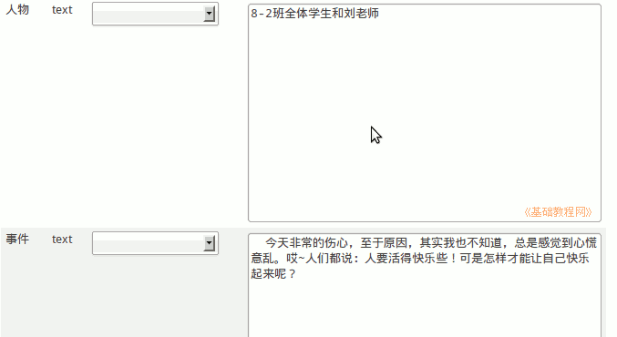
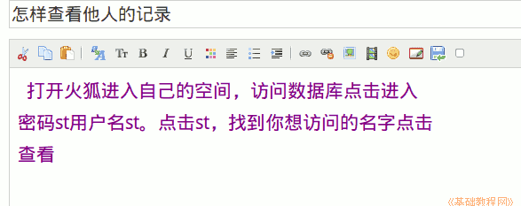

2011-2012 第一学期八年级电子表格教学课程设计
作者：TeliuTe 来源：基础教程网
二十五、实际操作 返回目录 下一课学习目标：学会查询其他人的记录；
注意事项：日志写操作步骤，绕过弯来；
1、实际操作
1）按照上一节的方法，添加一条今天发生事情的记录；

2）进入数据表点“打印预览”查看记录；
3）日志写一篇怎样查看他人的记录；

课后记 2011-12-12 17:06：
另一个班不知上不上，先记上吧本节学习了查询的基础知识，如果你成功地完成了练习，请继续学习下一课内容；
本教程由86团学校TeliuTe制作|著作权所有
基础教程网：http://teliute.org/
美丽的校园……
转载和引用本站内容，请保留版权信息和本站链接。